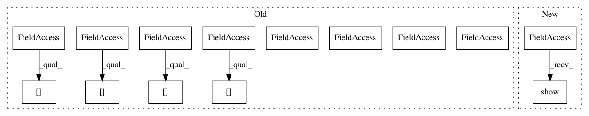

153f6e0ff5729fc22b68d5f6e0fd05edf96d8c2c,examples/datasets/plot_make_imbalance.py,,,#,36
Before Change
axs = [a for ax in axs for a in ax]
axs[0].scatter(X[y == 0, 0], X[y == 0, 1], label="Class /ǖ", alpha=0.5)
axs[0].scatter(X[y == 1, 0], X[y == 1, 1], label="Class /Ǘ", alpha=0.5)
axs[0].set_title("Original set")
plot_decoration(axs[0])
def ratio_func(y, multiplier, minority_class):
After Change
ax.set_title("Sampling ratio = {}".format(multiplier))
plt.tight_layout()
plt.show()
In pattern: SUPERPATTERN
Frequency: 3
Non-data size: 14
Instances
Project Name: scikit-learn-contrib/imbalanced-learn
Commit Name: 153f6e0ff5729fc22b68d5f6e0fd05edf96d8c2c
Time: 2019-11-17
Author: g.lemaitre58@gmail.com
File Name: examples/datasets/plot_make_imbalance.py
Class Name:
Method Name:
Project Name: scikit-learn-contrib/imbalanced-learn
Commit Name: 153f6e0ff5729fc22b68d5f6e0fd05edf96d8c2c
Time: 2019-11-17
Author: g.lemaitre58@gmail.com
File Name: examples/datasets/plot_make_imbalance.py
Class Name:
Method Name:
Project Name: AIRLab-POLIMI/mushroom
Commit Name: 51c38d42c3cd34a614a1fd56f1c8a7a9f5d24a3e
Time: 2017-06-19
Author: carlo.deramo@gmail.com
File Name: examples/grid_world.py
Class Name:
Method Name:
Project Name: AIRLab-POLIMI/mushroom
Commit Name: 06279f054fcfa03517b1bd51ef156a9182af146f
Time: 2017-06-16
Author: carlo.deramo@gmail.com
File Name: examples/grid_world.py
Class Name:
Method Name: